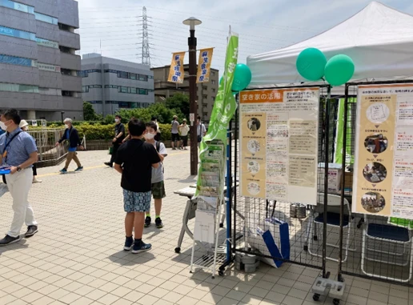

イベント「新ゆりフェスティバルマルシェ」出展


小田急沿線既存住宅流通促進協議会では、2022年6月18日・19日に開催された「しんゆりフェスティバルマルシェ」に出展し、空き家・住宅ストックの利活用に関する情報発信や相談対応を行いました。
本出展は、あんしんストック住宅の事業化に向けた良質な空き家情報の把握、空き家問題に関する情報提供、空き家相談窓口の開設、サブリースに関する情報提供、協議会メンバー同士の交流機会の創出を目的として実施しました。
会場では、ノベルティ付きハンディング活動、空き家活用事例や試行物件のパネル展示、麻生区・多摩区の物件情報やリフォーム情報の掲載、専門家相談ブースの開設を行いました。
2日間で約700件のハンディングを行い、仲介購入相談3件、リフォーム相談2件、空き家アンケート2件につながるなど、協議会の取組みや空き家利活用の周知だけでなく、具体的な相談機会の創出にもつながりました。
また、出展を通じて、空き家活用をどのように分かりやすく伝えるか、来場者に足を止めてもらうためにどのような見せ方が有効かといった、今後の啓発活動に向けた課題も確認されました。
地域イベントへの出展は、協議会が地域住民と直接接点を持ち、空き家・住宅ストック活用を身近に伝えるための重要な取組みのひとつです。